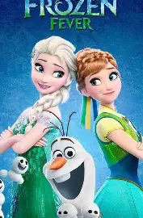

# 克里斯托夫 Kristoff

| 属性 | 内容 | |------|------| | 身份 | 采冰人 / 山地人，安娜的搭档与英雄（非王子） | | 能力 | 攀冰、驯鹿驾驭、野外生存 | | 伙伴 | 驯鹿斯文（由巨魔 Bulda 收养） |
角色速览
克里斯托夫是采冰人、非王子，性格高大强壮、粗犷少言、外硬内柔；动画上「underplayed」、动作高效，对女孩紧张时会反复摘戴帽子 （来源：《The Art of Disney Frozen》[p.092][p.093]）。幼年由山地巨魔 Bulda 家族抚养，视其为家人 （来源：《Frozen 1 青少小说》；《Frozen 2 The Official Movie Special》[ch.26]）。服装灵感来自北极原住民萨米人传统服饰 + 民间艺术纹样，配色品红/靛蓝呼应安娜 （来源：《The Art of Disney Frozen》[p.092][p.003]）。
性格特质
- 外冷内热、粗犷少言：身材高大强壮，说话简短直接，表面硬汉，实则心地柔软、重情重义。
- 笨拙的温柔：面对安娜时格外紧张，招牌动作是反复摘戴帽子，显出不善表达情感的憨直一面。
- 独立自强：靠采冰、驯鹿与野外生存技能独力谋生，务实而可靠。
- 视家人为一切：幼年由山地巨魔 Bulda 家族抚养，把养母与驯鹿斯文当作唯一亲人；常替斯文用低沉「驯鹿音」配音、自言自语，露出孤独中长大的细腻。
- 忠诚执着：受雇带安娜上山后逐渐被其打动，最终在安娜命悬一线时冒雪折返相救。
- 憨直幽默：坚信「驯鹿比人靠谱」，口头禅式的执念贡献了大量笑点。
外貌特征
- 身材高大健壮，金发、蓝眼，留着略显凌乱的胡子。
- 常戴一顶深色毛皮帽（紧张时会反复摘戴）；身穿萨米风情的厚实冬装——品红与靛蓝配色的外套、皮靴、背带与棕色皮护手。
- 随身工具为采冰斧与绳索，与驯鹿斯文形影不离。
主要剧情线与人物关系
第一部：克里斯托夫起初只是受雇带安娜上山的采冰人，途中被安娜的执着打动。他在冰宫劝艾莎控制魔法失败，又在安娜被汉斯背叛后赶回救她，目睹安娜为艾莎牺牲与解冻。结尾被安娜任命为「official Arendelle ice master and deliverer」，二人牵手 （来源：Disney 官方 / Frozen (2013)；《Frozen 1 青少小说》）。
第二部：克里斯托夫计划向安娜求婚，却总被森林冒险打断；在《Lost in the Woods》中以80年代摇滚风格唱出对安娜的依赖与迷失。最终他在阿伦戴尔城堡向安娜正式求婚，安娜接受 （来源：Disney 官方 / Frozen II (2019)）。
与斯文：不仅是坐骑，更是家人与内心独白对象。克里斯托夫常以低沉「驯鹿音」替斯文说话，体现他独处太久、习惯自言自语的特质 （来源：《Frozen 2 The Official Movie Special》[ch.26]；《The Art of Frozen II》[p.054]）。

《Frozen Fever》生日短片